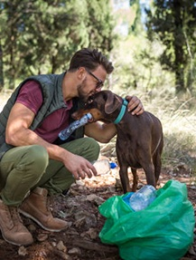

Wrapping That Makes Tails Wag!
Whats all the Wagging About?
Whats all the Wagging About?
Our pet-friendly wrapping paper lets your furry
friends join the fun-safe to tear, taste, and celebrate!
Because every gift should come with a wagging tail!.

Safe, Sustainable, and Tail-Wagging Fun!
Our pet-friendly wrapping paper is made from eco-friendly,
non-toxic, and digestible materials, so your furry friends can
safely tear, taste, and celebrate with you! Printed with food-
grade inks and crafted from biodegradable materials, it’s the
perfect way to wrap gifts—without worrying about your pets.
Because every celebration should be safe, fun, and full of
wagging tails!
Why Wrap & Wag?
Gift-giving should include everyone—even your pets! Traditional wrapping paper isn’t pet-safe, so we created a non-toxic, eco-friendly alternative made from digestible materials and food-grade inks. Now your furry friends can safely tear, taste, and celebrate with you!

Contact Us:
Wrap&Wag@gmail.com
858-880-5647
Wrap&Wag@gmail.com
858-880-5647